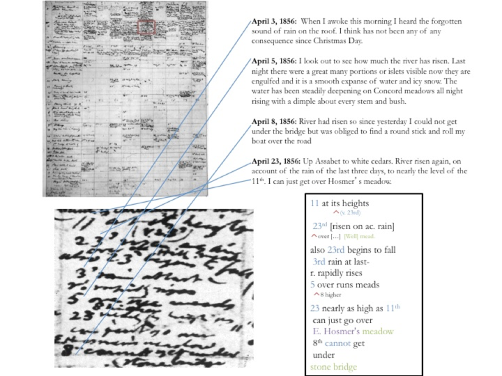

About the Kalendar
Between 1860 and 1862, the final years of his life, Henry David Thoreau attempted to consolidate the detailed observations of seasonal change recorded in the later years of his Journal in a variety of lists and charts he sometimes referred to as his “Kalendar.” Because Thoreau’s death interrupted the project in its early stages his ultimate intentions for these documents remain unknown, however the Journal and other late works provide evidence that he envisioned, in Robert Richardson’s words, “a grand calendar of Concord, the fullest possible account of a natural year in his hometown”(9). These late, previously unpublished manuscripts demonstrate that in these years Thoreau was immersed in a large-scale work that fully engaged and often challenged the methods of contemporary science. In his introduction to Thoreau’s late text Wild Fruits , Bradley Dean writes that in 1851 Thoreau
compiled the first of what would become many hundreds of phenological lists and charts on every conceivable seasonal phenomenon, such as the migration cycles of birds or the leafing, flowering, fruiting, and seeding of plants…Although his lists and charts have never been studied carefully, they are almost certainly the foundation for the large project that eventually included Wild Fruits . After reading John Evelyn’s Kalendarium Hortense or Gardener’s Almanack (1664) in the Spring of 1852, Thoreau occasionally referred to this large project as his “Kalendar.” Apparently he intended to write a comprehensive history of the natural phenomena that took place in his hometown each year (xi).Another likely model for the Kalendar was William Howett’s 1831 Book of the Seasons , a book Thoreau reviewed and which combines “observations and meditations organized by month and accompanied by tables of migrating birds, blooming flowers, budding trees, and emerging insects” (Baym).
The Kalendar project was a massive endeavor to chart the seasonal life of Concord in a way that reflects both Thoreau’s interest in the material particularity of natural occurrences and his desire to discern laws or patterns within such phenomena. Among the hundreds of lists and charts that Thoreau compiled during these years is set of charts in which he collected observations of “general phenomena” by month, with the phenomena listed in a column on the left side of the page, and the years along the top. In the spaces of the grid created by these two axes, Thoreau copied observations from the later years of the Journal These charts are generally concerned with weather patterns: rainfall, temperature, ice-out and other markers of seasonality. The chart for the month of April contains an additional column on the left edge of the page with numbers that may represent roughly average dates for each phenomenon. Though we can’t know exactly what Thoreau’s intent was for the Kalendar project, this evidence supports Dean’s view that the Kalendar would be a massive work tracking Concord’s seasonal phenomena through an “archetypal” year, organized, like Wild Fruits and The Book of the Seasons , as a sort of encyclopedia (xi).
The creation of the monthly charts was a multi-stage process. During these years, Thoreau’s routine was to walk for several hours each morning and spend the afternoon in his study working on a network of writing projects the central node of which was the Journal. Thoreau took field notes on his walks, usually on small scraps of paper. These he used as the basis for his Journal entries, which were often written in the present tense, though sometimes composed a day or even several days later. In 1860 he began mining the Journal for seasonal observations across the years, beginning with the Journal of 1850-51, the year his observations of the natural world famously intensified. He then compiled the seasonal data into monthly lists organized by year.
From these lists he then selected key representative categories to include in the charts of general phenomena. One of the most interesting features of these charts is juxtaposition of what would normally be considered “objective” and “subjective” categories of observation…The charts of general phenomena include Thoreau’s own activities and seasonally-determined behaviors (“Begin to wear one coat commonly,” “Sit below without fire commonly,” “1st am that I sit with open window” and “weather for half-thick coat”) alongside phenomena such as wind, rainfall and the opening of Walden pond.
Adapted from “ Knowing as Neighboring: Approaching Thoreau’s Kalendar ,” by Kristen Case ( J19: The Journal of Nineteenth-Century Americanists 2:1 March, 2014.)
The Kalendar in Context: Thoreau and Science
During the years in which Thoreau was compiling the Kalendar and the observations on which it draws, Thoreau frequently comments in the Journal on the nature of perception and specifically on what he sees as the flawed epistemology of science:
I think that the man of science makes this mistake, and the mass of mankind along with him: that you should coolly give your chief attention to the phenomenon which excites you as something independent on you, and not as it is related to you….With regard to such objects, I find that it is not they themselves (with which the men of science deal) that concern me; the point of interest is somewhere between me and them (i. e. the objects) . . . (Journal 10:165).The charts of general phenomena, in particular their integration of the categories of the “human” and the “natural,” provide a record of Thoreau’s own essentially relational and performative understanding of knowledge, an understanding that reflects the way that, as Laura Dassow Walls has demonstrated, Thoreau was both profoundly engaged with and deeply critical of professional science as is emerged in the second half of the 19th century. Placing Thoreau within an “alternative tradition of romantic science” that she associates with the German polymath Alexander von Humboldt, Walls argues that “recovering this alternative tradition enables a new understanding of the problematical studies which fill the later years of Thoreau’s Journal, which are also the years of his greatest literary productivity” and asserts, against the traditional view of the shift in Thoreau’s career, that “Thoreau was transformed not from an Emersonian transcendental poet to a fragmented empirical scientist, but from a transcendental holist to something new which combined transcendentalism with empiricism and enabled innovative, experimental and postsymbolic modes of thinking and writing” (4-5).
When Thoreau began compiling the lists and charts that comprise the Kalendar, he had been interested in seasonal phenomena for some time. An 1856 Journal entry details both his process of (in this case botanical) phenological observation and contrasts these practices with those of “systematic” botany.
About half a dozen years ago I found myself again attending to plants with more method, looking out the name of each one and remembering it. I began to bring them home in my hat, a straw one with a scaffold lining to it, which I called my botany box…. I remember gazing with interest at the swamps about those days and wondering if I could ever attain to such familiarity with plants that I should know the species of every twig and leaf in them, that I should be acquainted with every plant …Still, I never studied botany and do not to day systematically, the most natural system is still so artificial. I wanted to know my neighbors, if possible, — to get a little nearer to them. I soon found myself observing when plants first blossomed and leafed, and I followed it up early and late, far and near, several years in succession, running to different sides of the town and into the neighboring towns, often between twenty and thirty miles a day. I often visited a particular plant four or five miles distant, half a dozen times within a fortnight, that I might know exactly when it opened, beside attending to a great many others in different directions and some of them equally distant, at the same time. (9:157).Thoreau’s description of his processes of observation and collection during this period (from roughly 1850 on) emphasizes both the extraordinary intensity and the habitual quality of his activity, and contrasts it explicitly with the “systematic” approach of formal botany. His relationship to the non-human is characterized not by cool detachment but by energetic affection: a “gazing with interest” which contrasts strikingly with what Donna Haraway calls the “conquering gaze from nowhere” that characterizes popular depictions of science (581). Perhaps most notable here is his characterization of the plants he “visits” as “neighbors” and the process of observing them as the kind of knowing that is reflected by the expression “getting to know.” It is precisely the complexities involved in “neighboring” the non-human that Thoreau explores throughout his writing life, and that come to the fore in both the structure and content of his Kalendar manuscripts.
Adapted from “ Knowing as Neighboring: Approaching Thoreau’s Kalendar ,” by Kristen Case ( J19: The Journal of Nineteenth-Century Americanists 2:1 March, 2014.)
Leafing and Flowering Charts
Thoreau’s records of seasonal phenomena take several forms. Some track individual phenomena, such as the flowering of trees in April. On these charts, the individual species are listed in a column on the left side of the page, with the years (1852-1860) listed in a row along the top. The date of a tree’s first flowering is noted in the square corresponding to each year. Recently, the several of these charts of individual phenomena have been put to use by Boston University biologist Richard Primack, who has used them to study the effects of global climate change on plants’ flowering times and birds’ migratory habits in Concord. Primack’s important work, which suggests that nearly a third of the species that Thoreau documented can no longer be found in Concord, compares Thoreau’s records, along with those of later amateur naturalists, to his own field studies of local ecology. Please visit Richard Primack’s website to learn more about this important work. For now, the goal of Thoreau’s Kalendar is to transcribe only the charts of general phenomena, which exist for the months of April, May, June, and November. (Fragments and/or related lists also exist, according to William Howarth’s The Literary Manuscripts of Henry David Thoreau, for the months of October, December, January, February and March.) The manuscripts reproduced and transcribed here are housed at the Morgan Library and Museum in New York City and the Beinecke Rare Book and Manuscript Library at Yale University.
Transcription Process
The transcriptions presented here are provisional and incomplete. However, we believe that, even in their fragmentary state, they shed light on Thoreau’s processes as a thinker, observer, and writer. Fortunately, we have at our disposal the text from which all of the entries are derived: Thoreau’s Journal. Our process is to make a rough stab at transcription, then to consult the journal entries for the relevant dates, refine the transcription based on what we find there, and then to go through the whole cycle again, often several times, guessing, correcting, changing, refining, based, on the one hand, on an analysis of Thoreau’s handwriting and, on the other, on the “stable text” of the Journal.
Counterclockwise from top left: Kalendar manuscript page, enlarged individual entry, corresponding Journal entries, TEI transcription.
Links and TEI Encoding
The Kalendar transcriptions within the archive contain hyperlinks to the 1906 edition of the Journal, available in its entirety via Google Books. These source links are a key element of the archive because they highlight the interconnected nature of Thoreau’s late writings. A close examination of any the late works reveals the way that the information Thoreau gathered in the field was circulated through multiple texts, and perhaps the greatest benefit of a digital archive for these manuscripts is that it enables both the transcriber and the user to trace those circulations, in effect reanimating the relations that print publication has necessarily suppressed. The April entry “Ap. 1, Walden open average of 13 years,” reflects knowledge that was gathered over multiple years in the journal, and that also appears in two places within the “Spring” chapter of Walden . In other words, this writing (“Walden open av. of 13 years”), while it must be read within the Kalendar’s immediate context, should also be understood as neighboring a series of other texts, an understanding that hypertext uniquely enables.
The transcriptions are encoded in the TEI (Text Encoding Initiative) markup language. At this stage, only dates, personal names, place names, and manuscript notes (underlinings, gaps, additions, deletions, etc.) are identified within the TEI transcriptions, but we hope to include more categories as the project evolves.
Works Cited/Further Reading
- Baym, Nina. “Thoreau’s View of Science.” Department of English, University of Illinois at Urbana-Champaign. n.d. Web. Adapted from Journal of the History of Ideas , 26 (1963): 221-34.
- Berger, Michael Benjamin. Thoreau’s Late Career and the Dispersion of Seeds: The Saunterer’s Synoptic Vision . Rochester, NY: Camden House, 2000.
- Case, Kristen. “Thoreau’s Radical Empiricism,” in Thoreauvian Modernities: Transatlantic Conversations on an American Icon . Ed. Francois Specq, Laura Dassow Walls, and Michael Granger. Athens, GA: U of Georgia P., 2013. 187-199.
- —.“Knowing as Neighboring,” J19: The Journal of Nineteenth-Century Americanists 2:1 March, 2014.
- Dean, Bradley, ed. Wild Fruits: Thoreau’s Rediscovered Last Manuscript. By Henry David Thoreau. New York: Norton, 2000. Print.
- Howarth, William. The Book of Concord: Thoreau’s Life as a Writer. New York: Penguin, 1983.
- Johnson, Rochelle. Passions for Nature: Nineteenth-Century America’s Aesthetics of Alienation. Athens: Georgia, UP. 2009.
- Peck, H. Daniel. Thoreau’s Morning Work : Memory and Perception in A Week on The Concord and Merrimack Rivers , the Journal, and Walden. New Haven: Yale UP, 1990.
- Primack, Richard. Walden Warming: Climate Change Comes to Thoreau’s Woods. Chicago: U of Chicago Press, 2014.
- Richardson, Robert. Introduction. Faith in a Seed: The Dispersion Of Seeds And Other Late Natural History Writings by Henry David Thoreau. Ed. Bradley Dean. Washington DC: Island Press, 1993.
- Rossi, “Thoreau’s Multiple Modernities,” in Thoreauvian Modernities: Transatlantic Conversations on an American Icon. Ed. Francois Specq, Laura Dassow Walls, and Michael Granger. Athens, GA: U of Georgia P., 2013. 56-68.
- Walls, Laura Dassow. Seeing New Worlds: Henry David Thoreau and Nineteenth-Century Science. Madison: University of Wisconsin Press, 1995.
- —. “Thoreau’s Technology of Inscription.” In A Historical Guide to Henry David Thoreau . Ed. William Cain. Oxford, UK and New York: Oxford UP, 2000. Print.